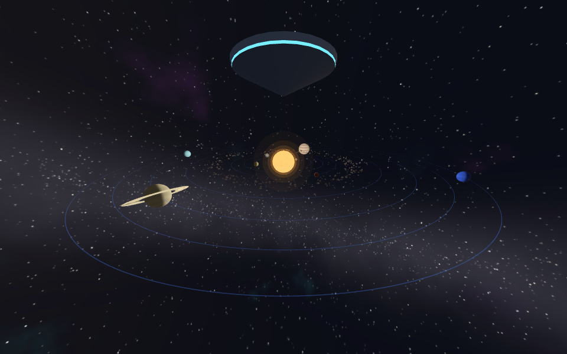
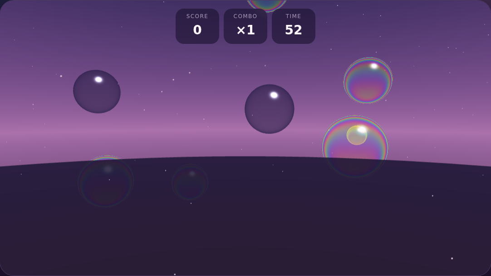

Vision Pro projects
Spatial web experiments for Apple Vision Pro. Open in Safari on visionOS.

Aurora Overlook
Step into a moonlit alpine valley beneath the northern lights, straight from Safari. Immersive website environment + inline <model> diorama.

Orbit Room
A room-scale Solar System: the Sun just past your Safari window, eight planets orbiting at waist height, Neptune sweeping by at arm's length.

Pinch Pop
A WebXR hand-tracking game: pop iridescent bubbles with a look and a pinch or a fingertip poke, with spatial audio. Also plays in any browser.